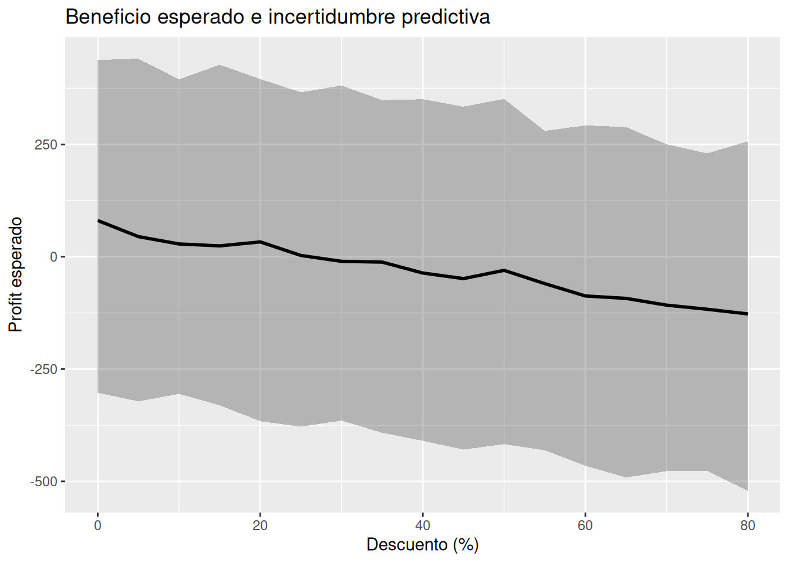
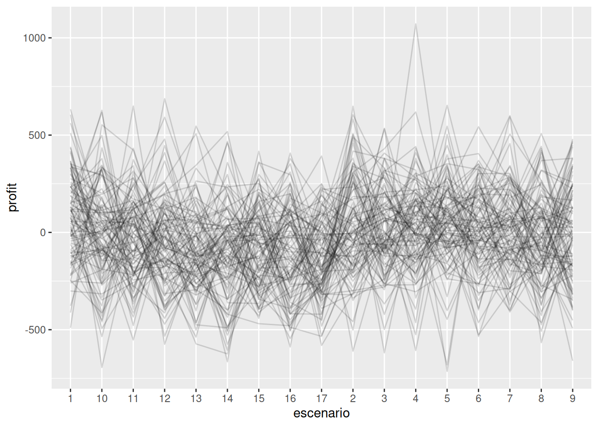

modelo_profit <- stan_glm(
Profit ~ Discount_c,
data = superstore,
family = gaussian(),
chains = 2,
iter = 1000,
refresh = 0
)9.- Predicciones probabilísticas
El futuro como una distribución de posibilidades
“El futuro no es un punto exacto. Es una distribución de posibilidades plausibles.”
9.1 Introducción
Las empresas toman decisiones todos los días sobre algo que todavía no ha ocurrido.
Intentan responder preguntas como:
- ¿Cuánto venderemos el próximo mes?
- ¿Cuánto beneficio obtendremos?
- ¿Necesitamos más inventario?
- ¿Vale la pena aumentar los descuentos?
- ¿Qué tan probable es alcanzar nuestras metas?
Todas estas preguntas comparten una característica importante:
se refieren al futuro.
Y el futuro siempre contiene incertidumbre.
Durante mucho tiempo, muchas organizaciones buscaron una única respuesta:
"Las ventas del próximo mes serán exactamente $125.000."
Sin embargo, la experiencia demuestra que el mundo real funciona de otra manera.
Las ventas cambian.
Los clientes cambian.
Los competidores cambian.
La economía cambia.
Incluso cuando hacemos un excelente análisis, nunca podemos eliminar completamente la incertidumbre.
Por eso los modelos probabilísticos adoptan una perspectiva diferente:
No intentan adivinar exactamente qué ocurrirá.
Intentan describir qué resultados son plausibles.
9.2 Predicción no significa certeza
Imagina que mañana sales de casa.
Consultas una aplicación meteorológica y observas:
Probabilidad de lluvia: 70%
¿Significa eso que necesariamente lloverá?
No.
Tampoco significa que necesariamente no lloverá.
Significa que la lluvia es un escenario plausible y relativamente probable.
Lo mismo ocurre en negocios.
Cuando una empresa predice ventas futuras, no está observando el futuro.
Está construyendo una descripción probabilística de escenarios posibles.
Por ejemplo:
| Escenario | Ventas |
|---|---|
| Pesimista | $9.000 |
| Esperado | $12.000 |
| Optimista | $15.000 |
Ninguno de estos valores es “el futuro verdadero”.
Son posibilidades plausibles.
La diferencia es fundamental.
Pensamiento determinista:
"Sé exactamente lo que ocurrirá."
Pensamiento probabilístico:
"Existen múltiples futuros compatibles con la información disponible."
9.3 Una breve introducción al forecasting
Antes de continuar conviene introducir un concepto frecuente en análisis de negocios.
¿Qué es forecasting?
Forecasting significa:
realizar estimaciones sobre eventos futuros utilizando información histórica.
Algunos ejemplos:
- ventas futuras
- demanda futura
- ingresos futuros
- beneficios futuros
- número de clientes
Las empresas utilizan forecasting para:
- planificar inventarios
- definir presupuestos
- contratar personal
- lanzar campañas
- gestionar riesgos
Pero incluso los mejores pronósticos contienen incertidumbre.
Por eso resulta más útil pensar en rangos plausibles que en números exactos.
9.4 Del modelo a las predicciones
En el capítulo anterior construimos modelos para entender relaciones entre variables.
Por ejemplo:
Profit = β0 + β1Discount + ϵ
La pregunta ahora es diferente.
Ya no queremos únicamente entender la relación.
Queremos utilizar el modelo para explorar futuros plausibles.
Aquí aparece una función muy importante de rstanarm:
posterior_predict()
9.5 ¿Qué hace posterior_predict()?
Intuitivamente, posterior_predict() le pregunta al modelo:
"Si el futuro fuera compatible con todo lo que hemos aprendido, ¿qué resultados podríamos observar?"
En lugar de producir una única respuesta:
Profit = 35
produce muchas respuestas plausibles:
28 42 31 37 19 45 ...
Cada una representa un posible futuro compatible con el modelo.
La idea es muy poderosa.
No obtenemos:
- una predicción
Obtenemos:
- una distribución de predicciones
9.6 Preparando los datos
Utilizaremos nuevamente el descuento como predictor.
9.7 Construyendo un modelo sencillo
La pregunta de negocio es:
¿Qué beneficios podríamos esperar bajo distintos niveles de descuento?
9.8 Generando escenarios futuros
Supongamos que queremos estudiar varios niveles de descuento.
# Generar varios niveles de descuento
nuevos_descuentos <- tibble(
Discount_c = seq(0, 80, by = 5)
)
nuevos_descuentos[1:7,] # produce:# A tibble: 7 × 1
Discount_c
<dbl>
1 0
2 5
3 10
4 15
5 20
6 25
7 30Ahora generamos predicciones.
# Generar una matriz de predicciones
predicciones <- posterior_predict(
modelo_profit,
newdata = nuevos_descuentos
)
predicciones[1:4, 1:4] # produce: 1 2 3 4
[1,] 127.9585 374.8490 -236.2800 -111.45925
[2,] -214.8982 168.3496 243.3044 60.55305
[3,] 114.1008 -176.8744 535.4702 -164.25150
[4,] -211.2330 -217.1305 497.8658 -111.58314[ reached ‘max’ / getOption(“max.print”) – omitted 996 rows ]
dim(predicciones) # produce:[1] 1000 17Interprestación: Significa 17 escenarios de descuento (columnas) y 1000 futuros posibles en cada escenario (filas)
El resultado de posterior_predict() es una matriz.
Cada fila representa una simulación posterior (debería haber 1000 filas).
Cada columna representa un nivel o porcentaje de descuento (debería haber 17 columnas).
Conceptualmente
| Simulación | 0% | 5% | 10% |
|---|---|---|---|
| 1 | 45 | 40 | 35 |
| 2 | 52 | 38 | 30 |
| 3 | 41 | 34 | 28 |
Cada fila representa un posible futuro.
9.9 Resumiendo las predicciones
Las empresas normalmente desean resumir escenarios.
Podemos calcular:
- mediana
- límite inferior plausible
- límite superior plausible
# Crear una tabla de resumen de las predicciones (con
# 17 filas de descuentos)
pred_resumen <- tibble(
Discount_c = nuevos_descuentos$Discount_c, # Descuento
mediana = apply(predicciones, 2, median), # mediana
li = apply(predicciones, 2, quantile, probs = 0.05), # límite inferiror
ls = apply(predicciones, 2, quantile, probs = 0.95) # límite superior
)
pred_resumen[1:7,] # produce:# A tibble: 7 × 4
Discount_c mediana li ls
<dbl> <dbl> <dbl> <dbl>
1 0 80.7 -303. 438.
2 5 44.8 -322. 441.
3 10 28.5 -305. 395.
4 15 24.2 -331. 427.
5 20 33.1 -366. 395.
6 25 2.85 -378. 366.
7 30 -10.2 -365. 381.Entendiendo el código
# apply sigue este esquema apply(X, MARGIN, FUN) donde: X es la
# matriz, MARGIN por donde recorrer (filas o columnas) y FUN es
# la función a aplicar. Margin = 1 significa trabajar por filas y
# Margin = 2 significa trabajar por columnas
apply(predicciones, 2, quantile, probs = 0.05) # produce: 1 2 3 4 5 6 7 8
-302.6284 -321.7946 -305.0633 -330.6706 -366.0190 -378.2409 -364.6010 -391.8511
9 10 11 12 13 14 15 16
-409.6352 -429.2318 -416.9962 -430.7802 -465.1202 -491.2621 -477.2188 -476.6683
17
-521.1988 apply(predicciones, 2, quantile, probs = 0.05) # produce: 1 2 3 4 5 6 7 8
-302.6284 -321.7946 -305.0633 -330.6706 -366.0190 -378.2409 -364.6010 -391.8511
9 10 11 12 13 14 15 16
-409.6352 -429.2318 -416.9962 -430.7802 -465.1202 -491.2621 -477.2188 -476.6683
17
-521.1988 apply(predicciones, 2, quantile, probs = 0.95) # produce: 1 2 3 4 5 6 7 8
438.0701 440.8573 394.7750 427.4786 395.4274 365.9891 381.1589 348.5475
9 10 11 12 13 14 15 16
350.5614 334.0927 351.2621 280.0479 292.3668 288.6414 250.2079 230.1644
17
256.8221 9.10 Visualizando bandas plausibles
Una visualización muy útil consiste en mostrar:
- valor central
- incertidumbre predictiva
# Visualizar bandas (ribbons) plausibles
ggplot(pred_resumen,
aes(x = Discount_c,
y = mediana)) +
geom_ribbon( # Crea la banda con los límites superior e inferior
aes(ymin = li,
ymax = ls),
alpha = 0.3
) +
geom_line(size = 1) + # Crea la línea que une los puntos
#geom_point() +
#coord_cartesian(ylim = c(-150, 100)) + # hace zoom
labs(
title = "Beneficio esperado e incertidumbre predictiva",
x = "Descuento (%)",
y = "Profit esperado"
)Warning: Using `size` aesthetic for lines was deprecated in ggplot2 3.4.0.
ℹ Please use `linewidth` instead.
Interpretación
La línea central representa:
el beneficio esperado.
La banda representa:
un rango de resultados plausibles.
La banda no indica error.
Indica incertidumbre.
Y la incertidumbre es una característica natural del futuro.
9.11 Visualizando múltiples futuros plausibles
Una manera aún más intuitiva consiste en visualizar escenarios individuales.
# Mostrar en formato largo los escenarios, donde los escenarios
# van del 1 al 17 y simulacion va del 1 al 100. Entonces en total
# hay 1700 filas
escenarios <- predicciones %>%
as.data.frame() %>% # Cambia de formato matriz a dataframe
slice_sample(n = 100) %>% # Se toma una muestra de 100
mutate(simulacion = row_number()) %>% # Se crea una variable para
# numerar las filas
pivot_longer( # Cambiar la tabla a formato largo
-simulacion, # usa todas las columnas excepto simulacion
names_to = "escenario",
values_to = "profit"
)
escenarios # produce# A tibble: 1,700 × 3
simulacion escenario profit
<int> <chr> <dbl>
1 1 1 18.6
2 1 2 303.
3 1 3 -229.
4 1 4 433.
5 1 5 -89.4
6 1 6 101.
7 1 7 272.
8 1 8 123.
9 1 9 -339.
10 1 10 -267.
# ℹ 1,690 more rowsEntendiendo el código
# Matriz de predicciones posteriores para distintos tipos de
# probabilidades.
escenarios2 <- predicciones
escenarios2[1:4, 1:4] # produce: 17 columnas , 1000 filas 1 2 3 4
[1,] 127.9585 374.8490 -236.2800 -111.45925
[2,] -214.8982 168.3496 243.3044 60.55305
[3,] 114.1008 -176.8744 535.4702 -164.25150
[4,] -211.2330 -217.1305 497.8658 -111.58314# Cambiar la matriz a tabla o dataframe
escenarios2 <- predicciones %>%
as.data.frame()
escenarios2[1:4, 1:4] # produce (17 columnas, 1000 filas): 1 2 3 4
1 127.9585 374.8490 -236.2800 -111.45925
2 -214.8982 168.3496 243.3044 60.55305
3 114.1008 -176.8744 535.4702 -164.25150
4 -211.2330 -217.1305 497.8658 -111.58314# Quedarse con una muestra de sólo 100 participantes
escenarios2 <- predicciones %>%
as.data.frame() %>%
slice_sample(n = 100) # escoger aleatoriamente 100 participantes
escenarios2[1:4, 1:4] # produce (17 filas, 100 columnas) 1 2 3 4
1 59.307484 -342.68409 -88.53183 136.6269
2 120.395815 240.70402 -193.63095 -353.0309
3 150.697472 -32.81547 -122.44038 -116.7228
4 3.849249 455.69426 138.76505 -63.2346# Crear una variable que numera cada una de las 100 filas
escenarios2 <- predicciones %>%
as.data.frame() %>%
slice_sample(n = 100) %>%
mutate(simulacion = row_number()) # crear la variable simulacion
# y numerar las filas
escenarios2[1:4, -14:-1] # produce: 15 16 17 simulacion
1 185.066402 -328.782740 -482.5944 1
2 -232.494609 155.725731 -36.7883 2
3 -2.340326 6.434715 -185.9234 3
4 164.017554 -114.231937 -224.2209 4# Mostrar en formato largo los escenarios, donde los escenarios
# van del 1 al 17 y simulacion va del 1 al 100
escenarios2 %>%
pivot_longer( # Cambiar la tabla a formato largo
-simulacion, # usa todas las columnas excepto simulacion
names_to = "escenario",
values_to = "profit"
)# A tibble: 1,700 × 3
simulacion escenario profit
<int> <chr> <dbl>
1 1 1 243.
2 1 2 284.
3 1 3 132.
4 1 4 -167.
5 1 5 -162.
6 1 6 -364.
7 1 7 115.
8 1 8 -227.
9 1 9 35.0
10 1 10 -366.
# ℹ 1,690 more rowsVisualizar escenarios individuales
# Visualizar escenarios idividuales
ggplot(
escenarios,
aes(
x = escenario,
y = profit,
group = simulacion # agrupar por simulación
)
) +
geom_line(alpha = 0.15)
¿Qué estamos viendo?
Cada línea representa:
un futuro posible.
Ninguna línea es “la correcta”.
Todas son compatibles con lo que el modelo ha aprendido.
Este gráfico suele producir una intuición muy poderosa:
el futuro no es único.
9.12 Escenarios de negocio
Imaginemos tres niveles de descuento.
| Escenario | Descuento |
|---|---|
| Conservador | 5% |
| Moderado | 20% |
| Agresivo | 40% |
Podemos obtener predicciones para cada caso.
# Obtener predicciones para cada caso
escenarios_negocio <- tibble(
Discount_c = c(5,20,40)
)
predicciones2 <- posterior_predict(
modelo_profit,
newdata = escenarios_negocio
)
predicciones2[1:4,] # produce (3 columnas y 1000 filas): 1 2 3
[1,] 34.89809 -136.1766 -59.47916
[2,] 23.43315 -136.3448 -103.82738
[3,] 162.07619 -111.8476 -41.56589
[4,] 355.17684 -302.5479 29.99618Ahora la conversación cambia.
Ya no preguntamos:
¿Cuál será exactamente el beneficio?
Preguntamos:
¿Qué rango de beneficios es plausible bajo cada estrategia?
Esta forma de pensar se parece mucho más a cómo toman decisiones las empresas reales.
9.13 Incertidumbre del modelo e incertidumbre del futuro
Existe una diferencia importante.
El modelo tiene incertidumbre sobre:
- los parámetros
- la pendiente
- el intercepto
Pero además existe incertidumbre sobre:
- clientes individuales
- pedidos futuros
- eventos imprevistos
Por eso las predicciones futuras suelen ser más inciertas que las estimaciones de parámetros.
En lenguaje sencillo:
comprender el pasado es más fácil que anticipar exactamente el futuro.
9.14 ¿Por qué las bandas plausibles son más honestas?
Imagina dos analistas.
Analista A:
"El beneficio será exactamente $30."
Analista B:
"El beneficio probablemente estará entre $10 y $50."
El segundo analista reconoce explícitamente la incertidumbre.
Y precisamente por eso suele ofrecer información más útil para la toma de decisiones.
Las bandas plausibles no muestran debilidad.
Muestran honestidad analítica.
9.15 Aplicación en negocios reales
Las empresas rara vez operan con números exactos.
Normalmente trabajan con escenarios.
Por ejemplo:
Inventario
En lugar de asumir:
venderemos exactamente 1.000 unidades
consideran:
podríamos vender entre 800 y 1.200 unidades.
Presupuestos
En lugar de:
beneficio = $50.000
utilizan:
beneficio plausible entre $40.000 y $60.000.
Marketing
En lugar de:
obtendremos 500 clientes
consideran:
entre 400 y 650 clientes.
La gestión moderna consiste en prepararse para varios futuros plausibles.
Reflexión bayesiana
Uno de los errores más frecuentes en análisis de datos es confundir una predicción con una promesa.
Los modelos probabilísticos nos recuerdan algo importante:
Toda predicción contiene incertidumbre.
La incertidumbre no significa ignorancia.
Significa reconocer honestamente los límites de nuestro conocimiento.
Cuando mostramos distribuciones predictivas y bandas plausibles estamos comunicando una visión más realista del futuro.
No estamos diciendo:
"Esto ocurrirá."
Estamos diciendo:
"Esto parece razonablemente plausible dada la información disponible."
Y esa diferencia es precisamente la esencia del pensamiento bayesiano.
Errores frecuentes de interpretación
Error 1
Pensar que la línea central es el futuro verdadero.
La línea central es solamente un resumen.
Error 2
Ignorar la amplitud de la banda plausible.
La amplitud contiene información valiosa sobre riesgo.
Error 3
Comparar únicamente valores promedio.
Los rangos también importan.
Error 4
Suponer que una predicción es una garantía.
Las predicciones describen posibilidades, no certezas.
Ejercicios
Ejercicio 1
Genera bandas plausibles utilizando:
- Sales como variable respuesta.
¿Cómo cambia la incertidumbre?
Ejercicio 2
Compara escenarios de descuento:
- 0%
- 10%
- 30%
- 50%
¿Qué diferencias observas en las distribuciones predictivas?
Ejercicio 3
Construye un gráfico con 100 futuros plausibles utilizando posterior_predict().
¿Qué te transmite visualmente?
Ejercicio 4
Identifica un escenario donde el valor promedio parezca atractivo, pero la incertidumbre sea muy amplia.
¿Tomarías esa decisión?
¿Por qué?
Ejercicio 5
Explica con tus propias palabras la diferencia entre:
- una predicción puntual
- una distribución predictiva